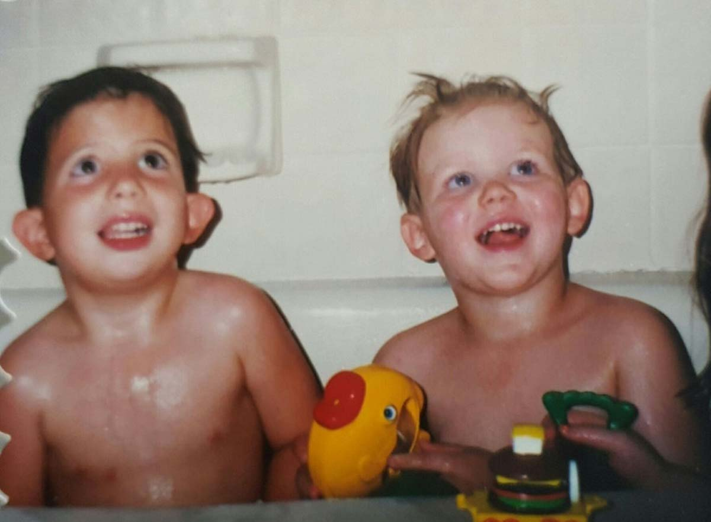
Ashton's Life
Bath-time chaos, a rubber duck, and the start of it all. "Twenty years. Every one a gift."
Twenty years. That is what GOD gave us with Ashton, and every one of those years was a gift. This page walks through his life — not how it ended, but how he lived it. These are the milestones we hold onto.
-
April 5, 1995 — Ashton is born.
GOD gave us Ashton on April 5, 1995, at Sid Peterson Hospital in Kerrville, Texas.
-
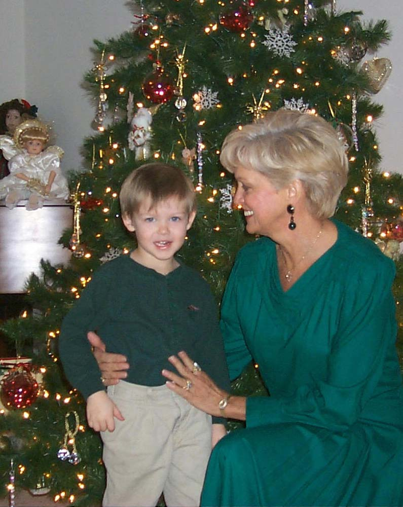
"So many precious memories." At the Christmas tree with his Grandmother Love. -
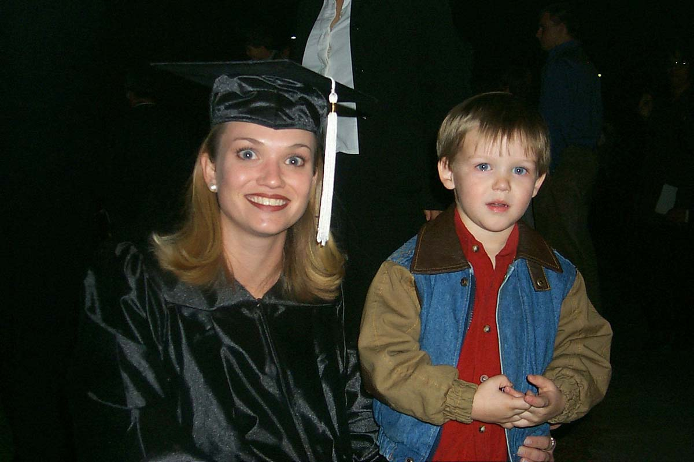
Graduation day — his Aunt Cayce, cap and gown, with her arm around young Ashton. -
A year with uncle Rod.
Ashton spent a year living with his uncle Rod and family, who took him into their home and gave him a Godly environment. It was a special year in his life.
-
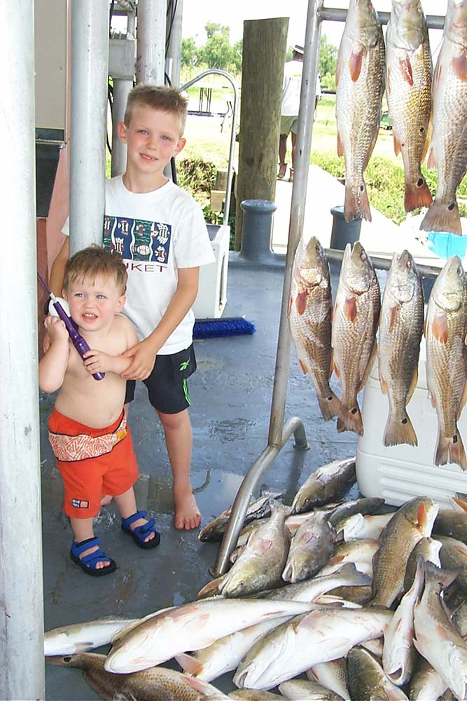
"Getting busy living." Ashton (right) and his brother Jayden at the dock beside an enormous day's catch — pure Texas-boy triumph. -
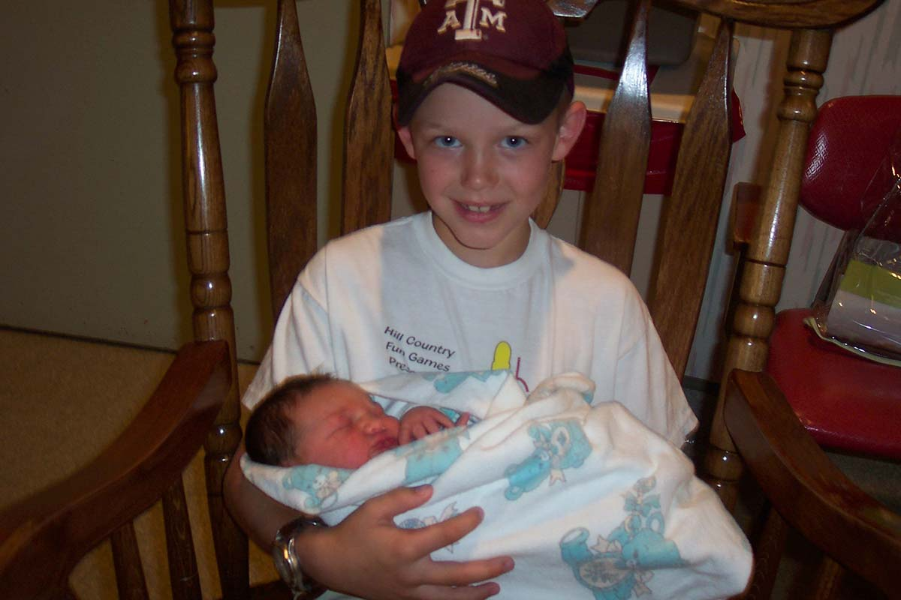
"Always ready to pitch in." Very carefully holding his baby brother, Jayden. -
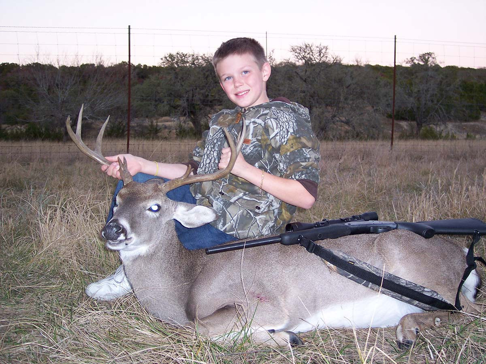
In full camo behind a whitetail buck in a dusk field. -
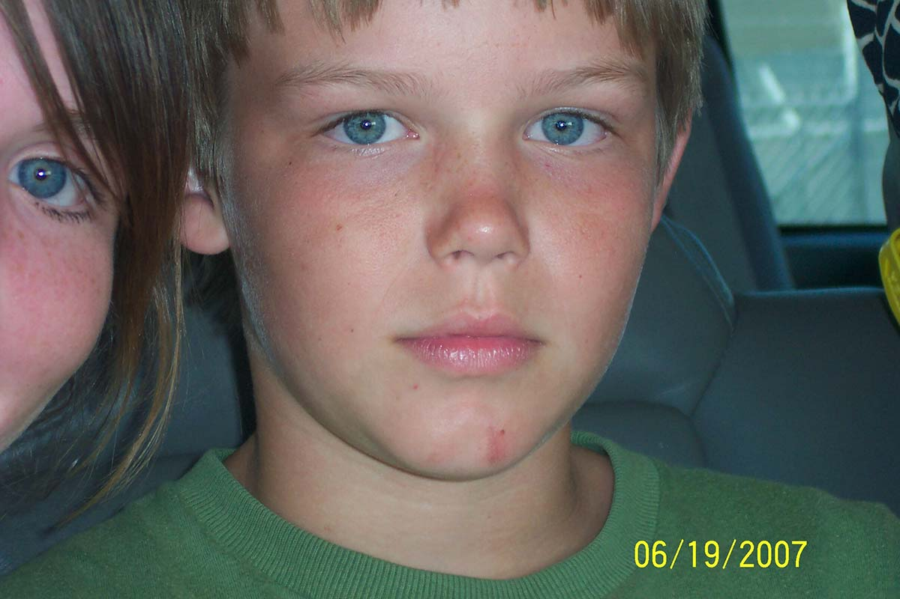
"That wry smile, even then." Twelve years old — freckles, clear blue eyes, that steady look. June 19, 2007. -
Ingram Tom Moore High School.
Ashton graduated from Ingram Tom Moore High School — a quiet, humble young man with a wry smile, liked or loved by everyone who knew him.
-
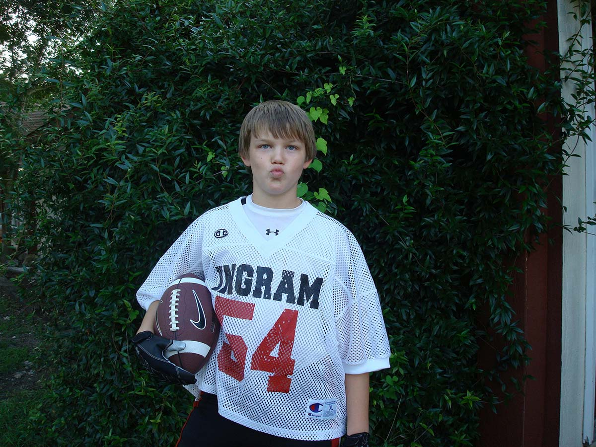
Ingram #54 — football tucked under one arm, game face on. -
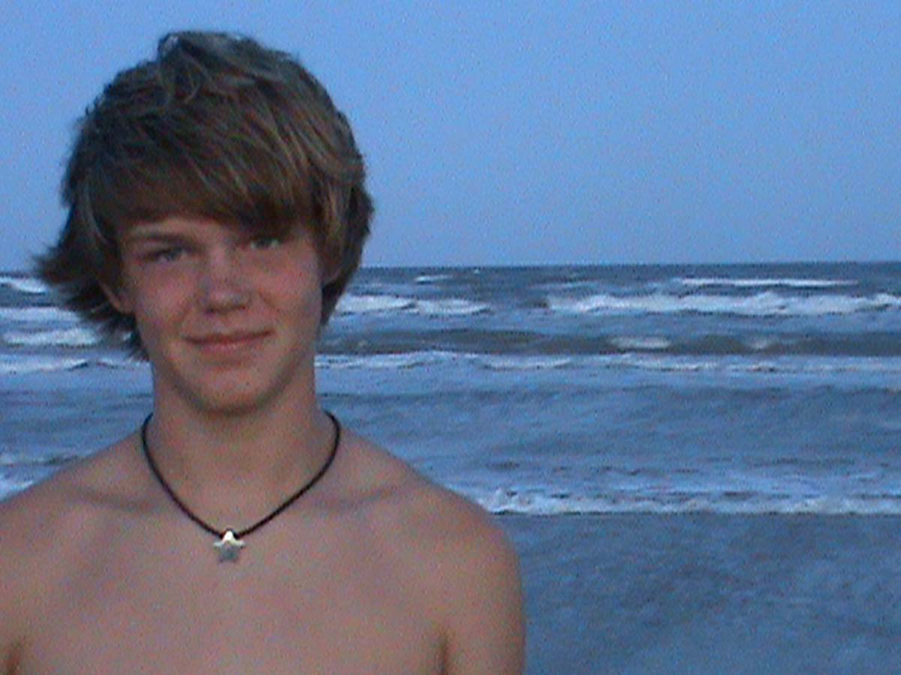
"A quiet, humble young man, liked or loved by all who knew him." At the beach at dusk, wind-blown hair, the ocean breaking behind him. -
Tennis, and Coach Moralez.
Ashton played tennis at Ingram Tom Moore, and there he found his coach and mentor, Chris Moralez. Coach poured years of love into Ashton, and Ashton loved him very much.
-
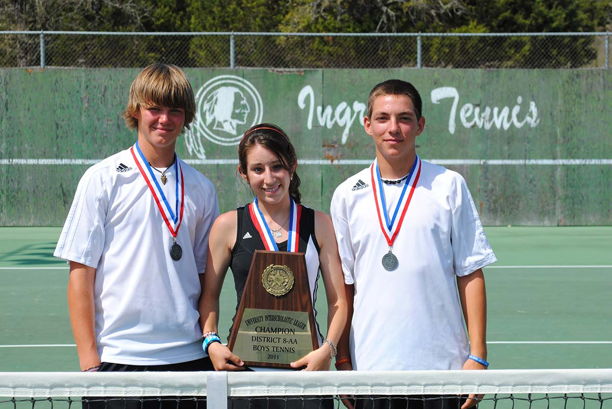
District champions — Ashton at left, medals around their necks, plaque in hand. -
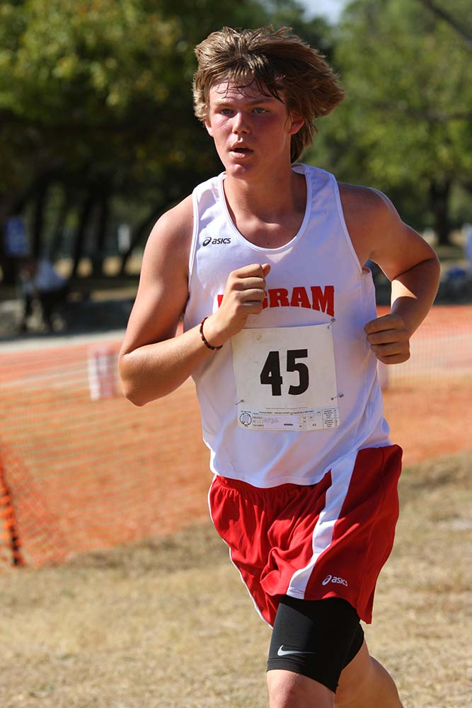
Mid-stride and locked-in at a cross-country meet, race bib #45. -
Crystal and family.
For many years Ashton was loved by Crystal and her family, and he loved them like his own.
-
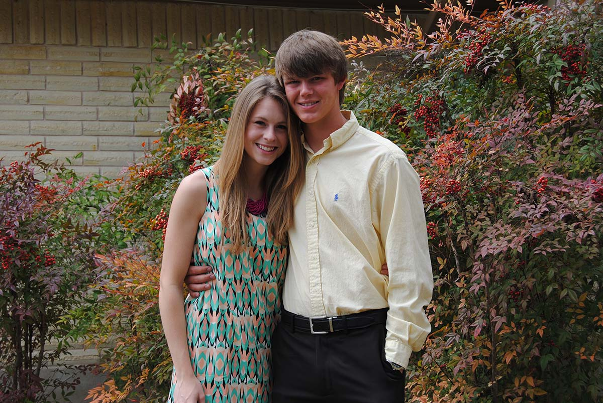
Dressed up against the autumn foliage — dance or homecoming night, with his girlfriend. -
College and work.
Ashton was a fulltime student at Blinn Junior College in Bryan, Texas, with excellent grades, and he worked 30 hours a week on top of it. He was getting busy living.
-
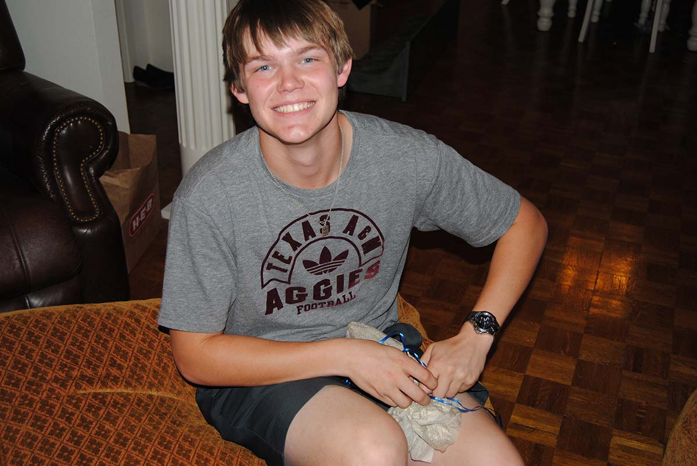
A huge grin in his Texas A&M Aggies tee, puppy in his lap — the college years beginning. -
A giving heart.
Ashton wanted to donate a kidney to his aunt. That tells you who he was. He didn't wait to be asked to help — he just helped.
-
June 13, 2015 — With GOD.
On June 13, 2015, GOD took Ashton home. He was twenty years old. There are no words for what we lost that day, so we hold onto HIS: Ashton is where eagles soar.
-
Nine lives saved.
Even in death, Ashton was still getting busy living. His organs saved 9 lives immediately, and perhaps over 100 more people were helped through skin grafts and bone marrow. Read more on the Nine Lives page.
-
The memorial services.
Family and friends gathered at City West Church in Ingram, Texas, to remember Ashton. His uncle Chad presided over the services, and Dan Stisser and his Exit 505 band provided the music.
-
January 2016 — this site.
We first published this memorial in January 2016, so that Ashton's life — and his life lessons — would never be forgotten.
-
The scholarship carries on.
The Ashton Hughes ITM Memorial Tennis Scholarship gives $250 each year to 2 students at Ingram Tom Moore High School, directed by Coach Chris Moralez. Ashton is still helping our youth, year after year.
-
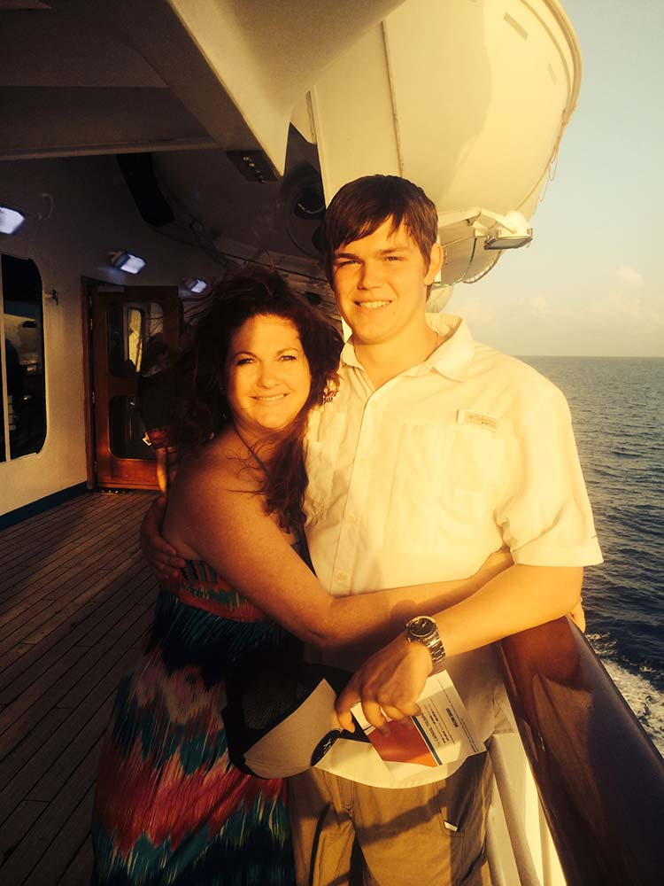
On the ship's deck at sunset with his mom — golden light.